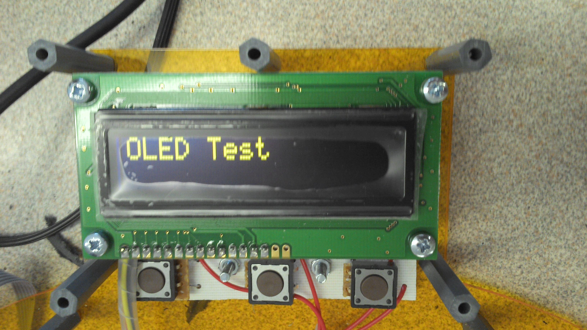
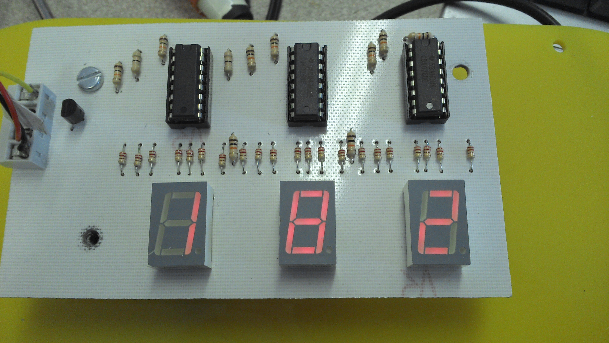

Microprocessor Controlled Dart Board with Automated Scoring and Hit Recognition
Technologies used:
- PIC Microcontrollers
- Laser Cutting
- 3D Printing
Skills demonstrated:
- Programming
- Product Design
- Circuit Design
- Computer Aided Design and Manufacture
- Project Management
Concept
With the prevailing trend to integrate electronics and computation into every conceivable product, I designed and built an electronic dart board that would automatically detect where the player had hit, keep track of scores and declare a winner. The prototype had 31 scoring sections, an OLED display, two large score readouts and very loud siren. Misses could be reported by way of a radio controller and the score of each dart was reported by an array of LEDs around the board.
Design
The key challenge in this project was designing a robust system for detecting hits. Several options were conveived of and considered, including pressure sensitive QTC, conductive foams and fabrics forming a switch with the dart tip and impact sensing microswitches. After some testing, it was determined that the microswitch option was likely to prove most durable over repeated use.
Once finalised, the design was drawn on Solidworks to produce models that coule be used for laser cutting and 3D printing. This model was also used to guide the complex task of assembling the finished product. The electronic system was prototyped on a breadboard, with a small number of inputs and outputs that could be easily scaled up.

Manufacture
Much of this project was manufactured from laser cut acrylic. The switches were mounted to a plastic plate, with polystyrene backed foam to catch the darts and transfer force to the switches. The prototype circuit was transferred to a computer and the number of switches and LEDs was scaled up. I then designed a PCB for the main logic circuit, with two more for the display systems that would go in different modules. This was all assembled by hand over the course of about a week and a half. The program from the electronic prototype was modified to use the additional input and copied to the microcontroller. I also wrote several alternative game modes.

Features
When finished, the dart board offered 3 game modes - 501 where players counted down from a score of 501 to 0, finishing on a double, first to 1000 where players have to get the hughest score possible and top dart, where players each throw one dart and the highest score wins. The scores are shown on two seven segment displays and the game is controlled via an OLED screen and 3 multi-function buttons. A loud siren sounds when one player can be declared as the winner.
